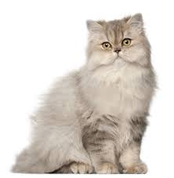
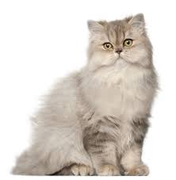

Tabbies are noted for their stripes, swirls, and dots, which come in an almost
unlimited variety of colours and patterns. Their coats feature a single main
hue with brown and black colour stripes. Brown mackerel markings are the most
common.
Tabbies are easily distinguished by their gentle demeanour and the fabled
capital 'M' on their furry brow.
Every sort of family, even those with children and other pets, can find a
tabby.
Siberian
Siberian cats are native to Siberia, a region of Russia noted for its long,
severe winters, as their name suggests. Their lengthy, waterproof triple coat
and powerful bodies reflect their rugged beginnings.
The personalities of these alert, well-built cats are kittenish. This breed is
affectionate and enjoys cuddling. Siberians are dedicated to their pet parents
and get along well with children and other animals in general.
British-Shorthair
The British shorthair is one of the most popular cat breeds in the world.
They have a thick, fluffy short coat as well as a cheerful, no-nonsense
sensibility towards life. British shorthairs make excellent family cats and
enjoy spending time with their owners, however they may frown upon being
handled or cuddled excessively.
The original British shorthair is coated in blue fur, but this lovely breed
comes in a range of hues and patterns. The nice factor is that this medium-to-large
cat has hardly any health issues.
Persian
Persian cats have been snuggling up with their owners since the 1600s, making
them one of the most well-known and adored cat breeds on the planet. It's
difficult to resist the allure of a Persian with their long, flowing coats,
heavy bodies, and flat faces.
Persian cats are a medium-sized breed that takes their position as a loving
companion very seriously, and they're always willing to be petted and fussed
over at any time. When introduced as kittens, this lovely feline comes in a
range of colours and colour combinations, and they get along with all
family members (including other furry ones). You won't find a more
affectionate friend if you're prepared to put in a little effort with grooming
Siamese
The Siamese cat is a beautiful, intelligent feline with a pleasant personality
who attracts people wherever they goes. These cats are recognised for being "dog-like"
and for requiring a lot of attention—human companionship is something this breed craves.
Siamese kittens are a popular breed . The Cat Fanciers' Association ranked the Siamese
as the 13th most popular cat breed. It's easy to see why they're so popular, given their
warm nature.
Ragdoll
Ragdolls are big, affectionate cats with a lot of patience and gentleness. Despite their size,
these cats are a placid and quiet breed that enjoys nothing more than playing and cuddling with
their owners.
This breed is known for being easy to care for and extremely social. They make wonderful family
pets and get along with kids. If you give this fluffy feline your time and attention, they will
repay you with eternal loyalty and affection.
Think you're confident on you cat breed knowledge? Click the button below to play a guessing game
 
